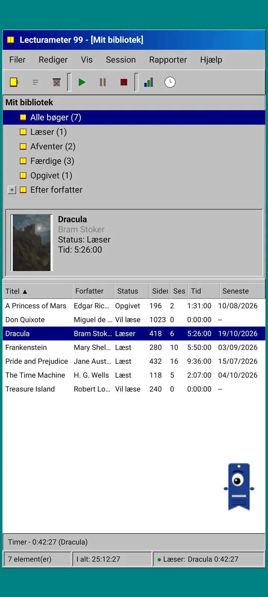
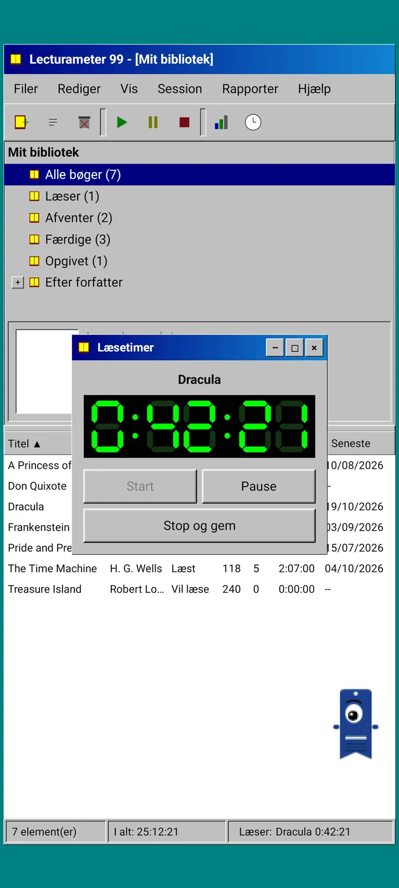
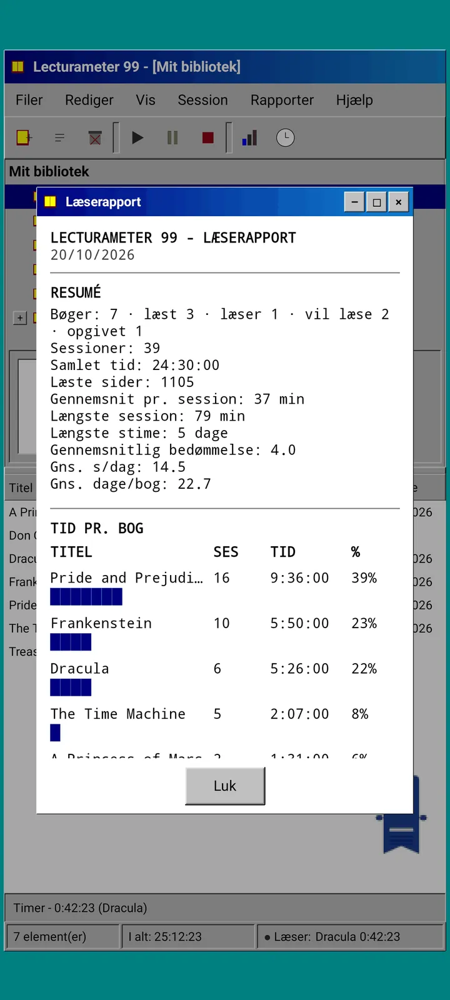
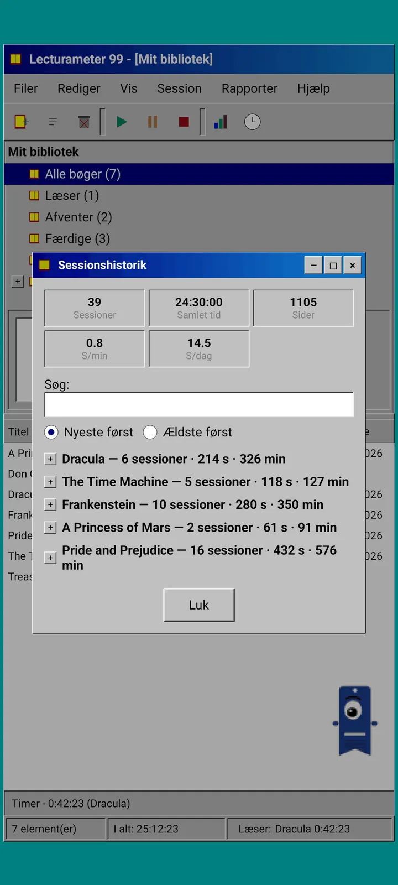
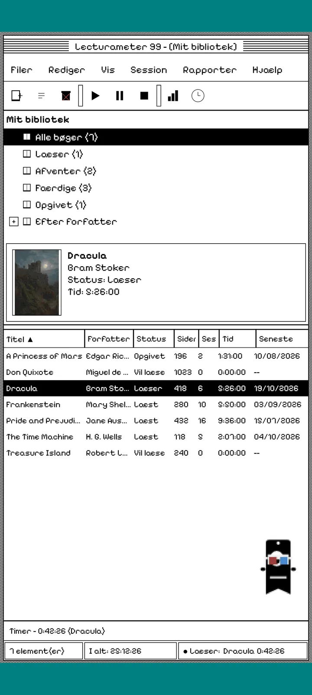
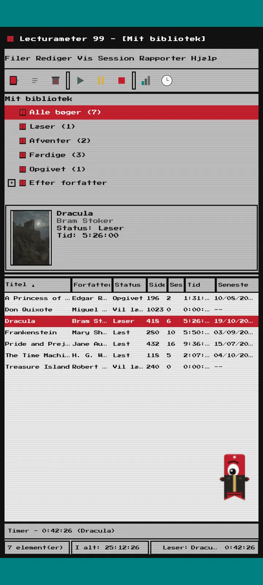
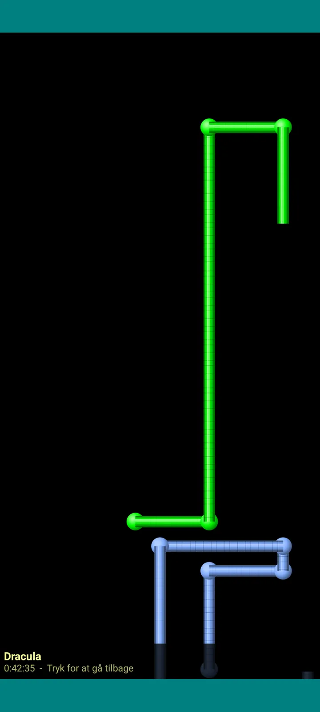

Lecturameter 1999
Lecturameter, som om du havde installeret den fra en cd-rom i 1999. En alternativ klient til appen, med vinduer, menuer og tabeller, der åbner dine rigtige sikkerhedskopier.

Hvad det er
Et skrivebordsprogram fra slutningen af halvfemserne, der kører på din telefon. Ét vindue over et blågrønt skrivebord, en menulinje, en værktøjslinje, et mappetræ, en tæt tabel og en statuslinje.
- Bibliotekstræ: alle bøger, læser, afventer, læst, opgivet og efter forfatter
- Tabel med titel, forfatter, status, sider, sessioner, tid og senest læst. Tryk på en kolonneoverskrift for at sortere
- Rigtig bogsøgning med det samme katalog, som Lecturameter bruger
- Importerer og eksporterer Lecturameters sikkerhedskopi og Goodreads-CSV'en. Dine data kommer ind og ud uden at miste noget

Hvorfor det findes
Et eksperiment: at genopbygge idéen bag Lecturameter fra bunden ud fra helt andre designpræmisser, uden at røre den rigtige app. Af alle nyfortolkningerne var 1999-udgaven den, jeg kunne lide mest, så jeg gjorde den færdig som en sjov øvelse og lavede den om til en komplet klient. Den er med vilje enklere end Lecturameter: det er et eksperiment, og den bliver i princippet ikke videreudviklet.
- Timer i et flydende vindue med grønt LCD-display. Den kan flyttes, minimeres til en proceslinje og bliver ved med at tælle i statuslinjen
- Når du stopper, beder dialogen Gem session om dine sider og regner dit tempo ud, ligesom i Lecturameter
- Gemte sessioner er Lecturameter-sessioner: de kommer tilbage til den moderne app, hvis du eksporterer en sikkerhedskopi fra Lecturameter 1999 og importerer den i Lecturameter.

Læserapport
Statistikken er en udskrevet rapport: overblik, tid pr. bog med blokbjælker, hastighed i sider pr. dag, en årskalender tegnet med tegn og de sidste syv dage.

Sessionshistorik
Sessioner grupperet efter bog i et træ med plus og minus, med fem tal øverst: sessioner, samlet tid, sider, sider pr. minut og sider pr. dag.

Gem session
Dato, minutter, første og sidste side, kommentar. Opsummeringen regner sider og tempo ud, mens du skriver. Når du når sidste side, spørger den, om du er færdig med bogen.

Pagi 99
Pagi rejser også til 1999: pixeleret og frit på skærmen som datidens kontorassistenter. Du kan trække rundt med den, den siger noget, når du trykker på den, og den viser tips i gule bobler.
Temaer
Klassisk 98 er gratis og standard. Pakken tilføjer seks mere, hver med sin egen baggrund og sine egne lyde.

Vælg det i menuen Vis
Vis, Tema... åbner et vindue med de syv temaer. Ændringen slår igennem i alle vinduer, timeren og Pagi med det samme.
- Klassisk 98, gratis og standard: grå vinduer, marineblå titellinjer og et blågrønt skrivebord
- Temapakke: 1984, Vingummi, Hukommelse, Tårne, Kerne og 8-bit
- Hvert tema har sin egen skrivebordsbaggrund og sine egne lyde til tryk, vinduer og timeren
- Vis, Temalyde slår lydene fra, hvis du læser i stilhed

Klassisk 98
Grå vinduer, marineblå titellinjer og et blågrønt skrivebord. Gratis, og det er det, appen åbner med.

1984
Et sort-hvidt skrivebord i én bit, med prikmønstre og firkantede vinduer.

Vingummi
Gennemsigtig farvet plastik, runde knapper og striber i baggrunden.

Hukommelse
Menuerne fra en diskkonsol fra halvfemserne, i mørkeblå nuancer.

Tårne
Endnu en diskkonsol fra halvfemserne, natteblå med lyseblå linjer.

Kerne
En sort og grøn konsol, som en skærm der aldrig slukker.

8-bit
Fede pixels, få farver og kantede bogstaver.

Prøv, før du betaler
Tryk på et låst tema, og hele appen skifter til det. Lukker du uden at købe, kommer det tidligere tema tilbage.
Pauseskærme
De vises kun, mens timeren kører, og du lader telefonen være. De venter 1, 3 eller 5 minutter, eller aldrig. Ét tryk, så er du tilbage, og timeren tæller videre.

Flyvende bøger
Pixelbøger, der flakser med omslagene hen over en sort skærm.

Bogstavfelt
Bogstaver fra mange alfabeter, der glider forbi som et stjernefelt.

Siderør
Rør lavet af sider, der tegner sig selv, indtil skærmen er fyldt.

Hoppende Pagi
Pagi, der hopper mod skærmens kanter.

Læseur
Sessionens tid med store LCD-cifre.

Kostumer til Pagi
Otte kostumer til Pagi 99. Du vælger dem under Vis, Pagis kostume..., og du kan prøve dem, før du betaler.
- Kassetteafspiller
- Kasket bagfrem
- 3D-briller
- Neonsolbriller
- Diskette i hånden
- Læderjakke
- Lommekæledyr
- Papkrone
Butik
Appen er gratis og komplet til at registrere din læsning. Det, du kan købe, ændrer kun udseendet.
Hele appen, uden tidsbegrænsning.
- Bibliotek, søgning, timer og sessioner
- Læserapport og sessionshistorik
- Lecturameter-sikkerhedskopi og Goodreads-CSV, ind og ud
- Temaet Klassisk 98 og Pagi 99
- Ingen konto og ingen reklamer
Engangsbetalinger, ingen abonnementer.
- Temapakke, €3.49: 6 temaer med baggrund og lyde, plus pauseskærmene
- Pauseskærme, €1.99: de 5 pauseskærme
- Pagi-kostumer, €1.99: de 8 kostumer
- Hele 1999, €4.49: temaer, pauseskærme og kostumer
Valgfrie drikkepenge i menuen Hjælp, hvis du vil give mig en kop kaffe.
Temaer og kostumer kan prøves live, før du betaler. Lukker du uden at købe, kommer det tilbage, du havde.
Hvad er anderledes end Lecturameter
Det samme som Lecturameter
- Samme data: bøger, sessioner, statusser, bedømmelser og noter. Sikkerhedskopien er den samme i begge apps.
- Bogsøgning efter titel eller forfatter.
- Rigtig timer: den tæller videre i baggrunden, også hvis du lukker appen.
- Ingen konto, ingen reklamer, ingen forbindelse undtagen til bogsøgning.
- De samme sprog som Lecturameter.
Kun i 1999-udgaven
- En skrivebordsbrugerflade fra 1999. Intet Material.
- Rigtige vinduer: du trækker i dem, minimerer dem og lukker dem med krydset.
- Læserapport i tekst, med en kalender tegnet med tegn.
- Genvejsmenu ved langt tryk og tastaturgenveje, hvis du tilslutter et tastatur.
- Pixeleret Pagi 99 med tipbobler.
- Valgfrie temaer med egen baggrund og egne lyde, pauseskærme mens timeren kører, og kostumer til Pagi.
Det, den med vilje undlader
- Intet Pro og intet abonnement. Det er helt gratis at registrere din læsning, butikken sælger kun udseende.
- Ingen udfordringer, bingoer, årligt Wrapped eller widgets.
- Ingen fordybet session, baggrundslyde eller sikkerhedskopi i Google Drive. Sikkerhedskopien gemmes som en fil.
Lukket test
Lecturameter 1999 er i lukket test på Google Play. iOS kommer senere, endnu uden dato.
- Bliv medlem af gruppen groups.google.com/g/lecturameter-1999
- Tilmeld dig som tester på play.google.com/apps/testing/com.lecturameter.r1999
- Installer den fra Google Play
I lukket test på Google Play, iOS senere. Læs blogindlægget for at se, hvor den kommer fra, og hvad du kan forvente.